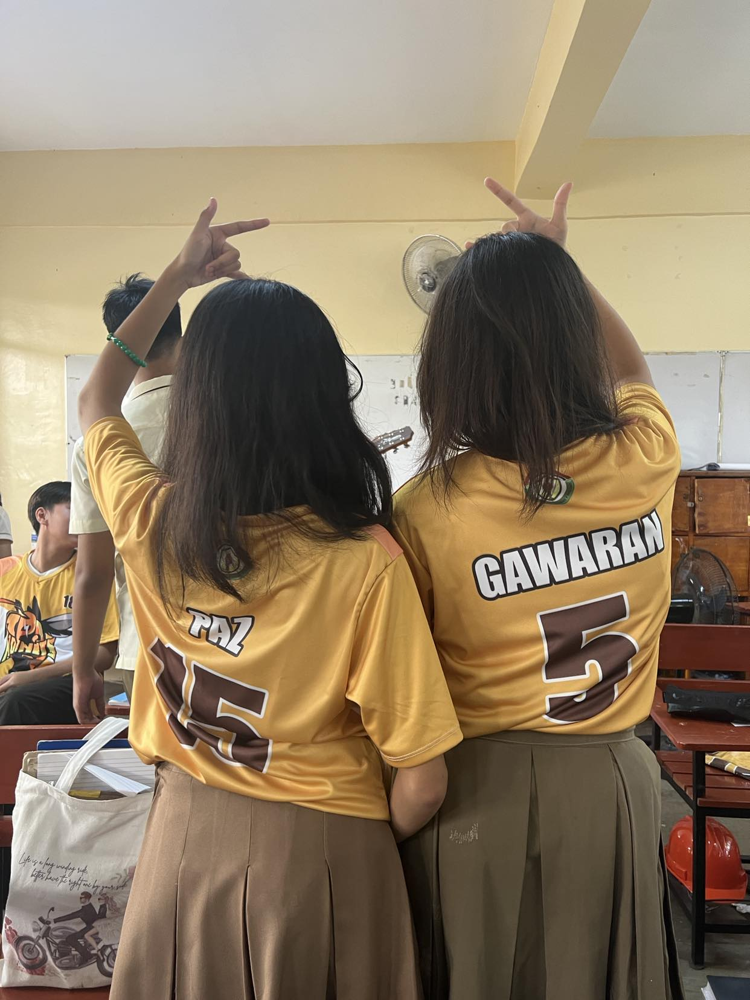
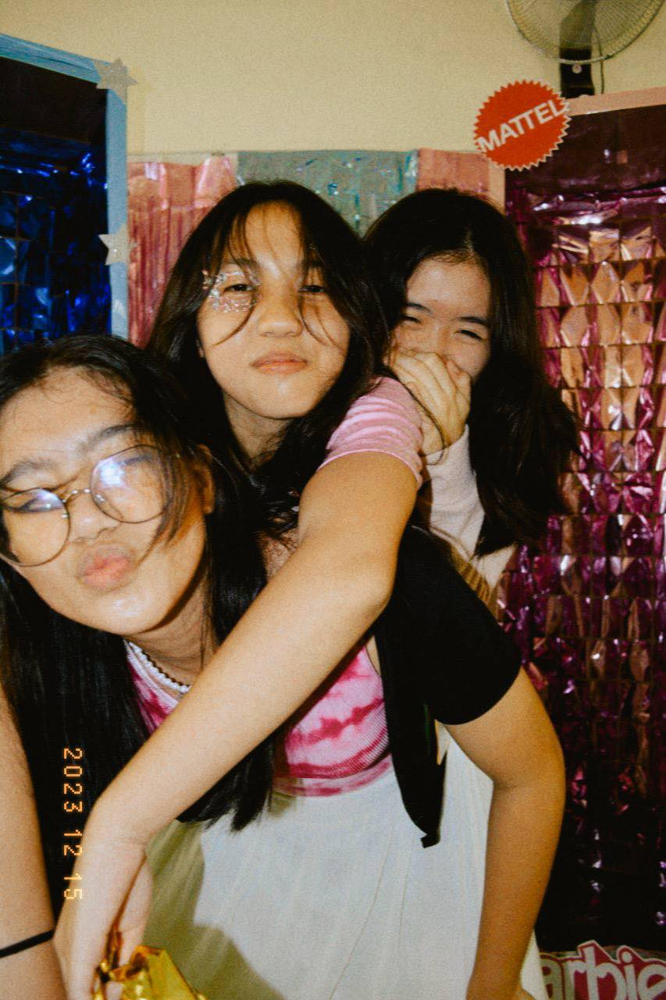
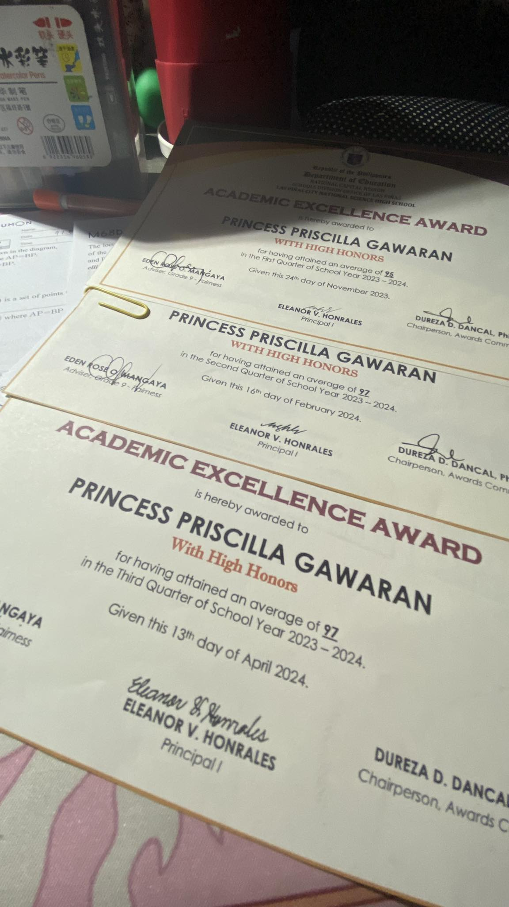
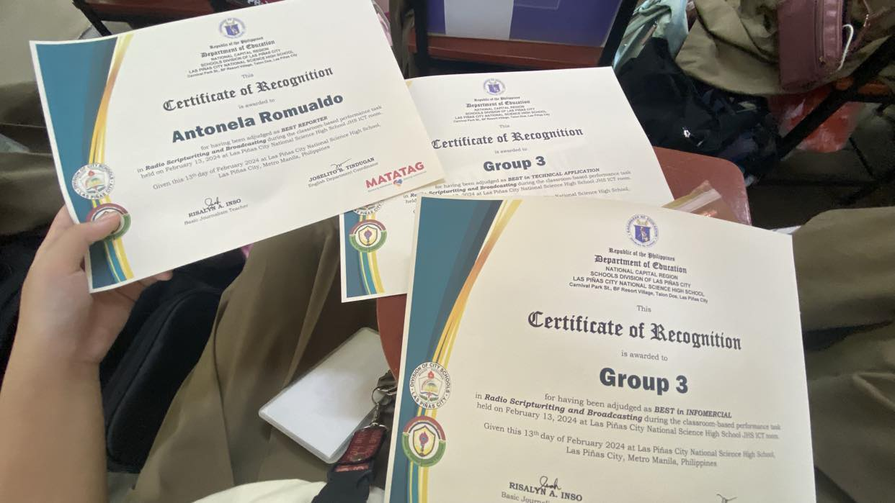
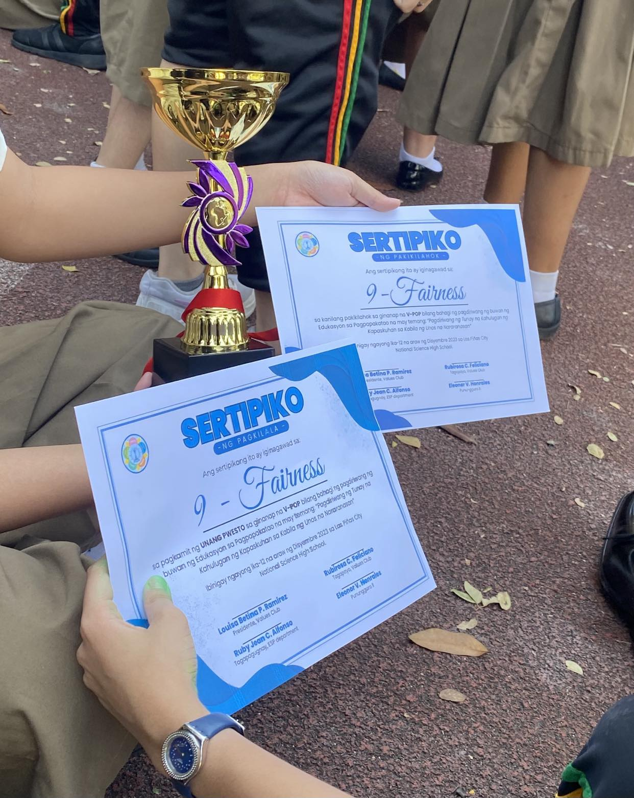
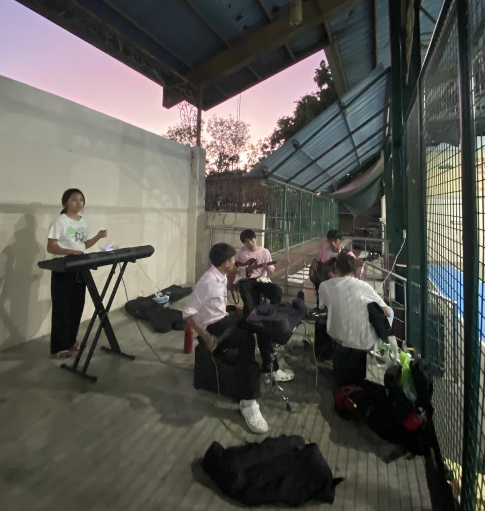
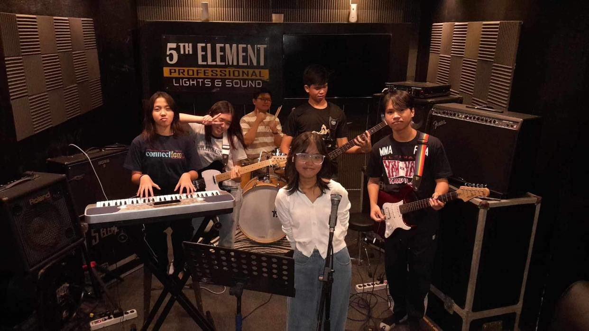

Hello! My name is Princess Priscilla K. Gawaran, but my friends call me 'Pris'.
Before the school year started, I was excited to dive into coding since last year's
ICT topics were no fun! (No offense to Sir Aristosa hehe). But as we got deeper into the lessons,
maybe I wasn't so excited.. Kidding! I'm still amazed at how I am capable now of creating and designing webpages.
I have a baby brother, Theo's the nickname. I wish to finish college and earn a doctorate for my family. That is what drives
me to be successful.
I believe in the saying, "Malalaman mo na may parating na blessing sa'yo kapag may tinanggal na si Lord sa'yo kasi
he's making space.", remarks by a BINI (Pinoy Girlgroup) member, Jhoanna. That's
just a little something about me!
Grade 9
Photo Gallery







